About us
The METAPLANTCODE project aims to test and optimize pan-European case studies on metabarcoding, provide best practice recommendations, optimize analysis pipelines for species identification, and create easy-to-use reference databases. The project will identify and specify gaps, publish best practice documents on FAIR data publishing of plant metabarcode data to GBIF and the INSDC databases, and implement ELIXIR-compatible multimodal DL models in novel tools for stand-alone metabarcoding analyses using different data sources. The project will also enhance species identification accuracy through GBIF records and metadata and map regional, national, and international botanical taxonomic checklists, red lists, and floras to the Catalogue of Life (COL) through COL ChecklistBank. Furthermore, taxonomic and floristic literature will be semantically enriched with new entity recognition and relationship extraction modules to support the enhanced identification of species via domain-specific descriptive/phenotypic features. An interface will be provided to link taxonomic names to treatments, identify homonyms and synonyms, and facilitate the conversion and annotation of flora, red lists, and ecological treatments. All METAPLANTCODE products will be available at project end FAIR+. The project will support knowledge transfer with associated partners and stakeholders from the start. Relevant stakeholders will be identified, priorities set, communication channels established, monitored, and revised as needed. Greater stakeholder engagement, training, and outreach efforts will be undertaken to ensure that plant metabarcoding becomes a routine standard for biodiversity monitoring in Europe and beyond in the future.
(c) Petra Bock


 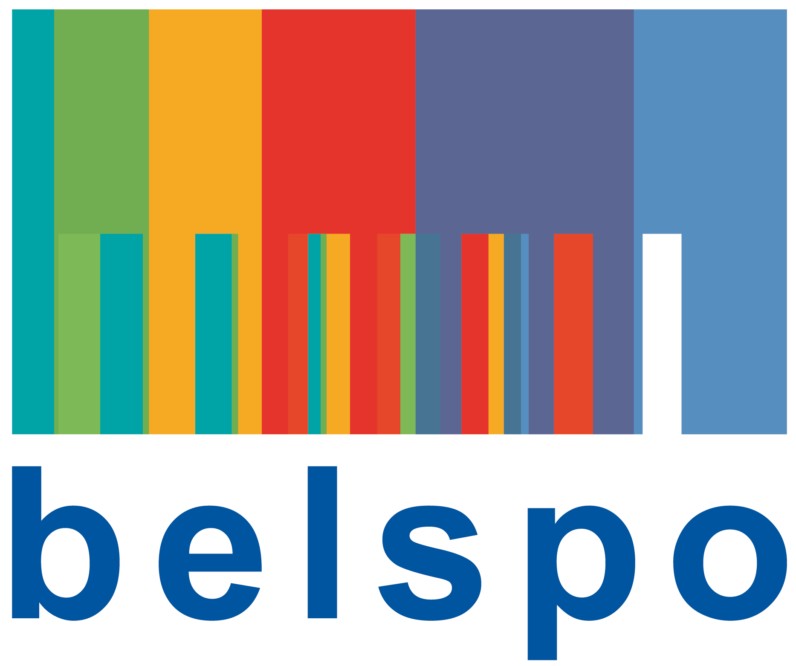
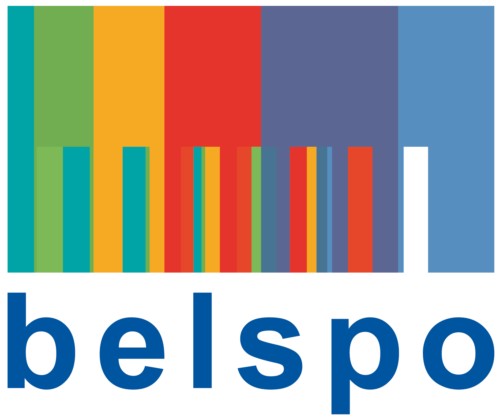
 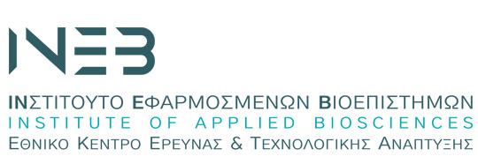
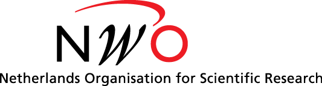
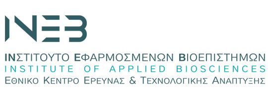
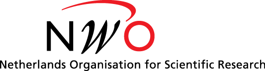
 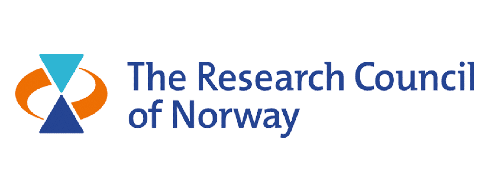
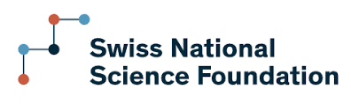
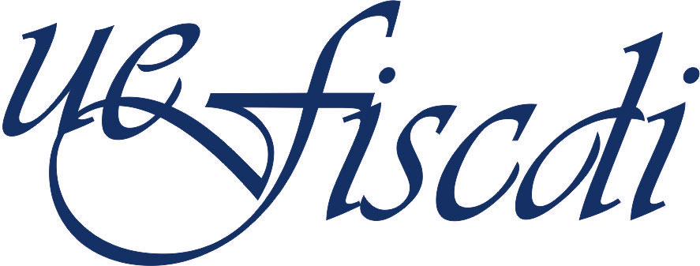
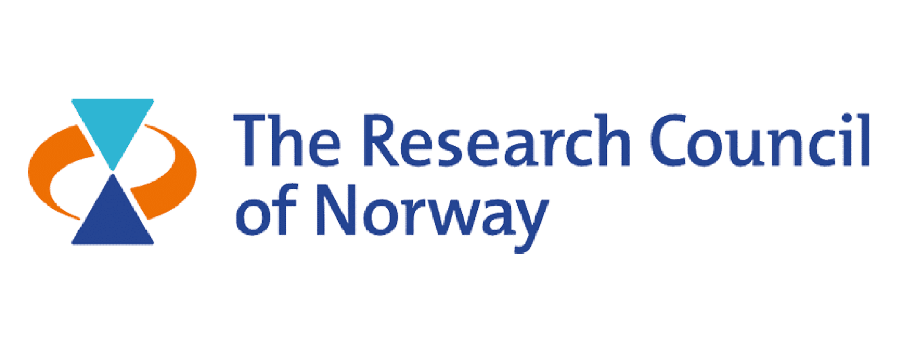
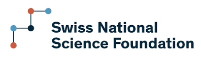
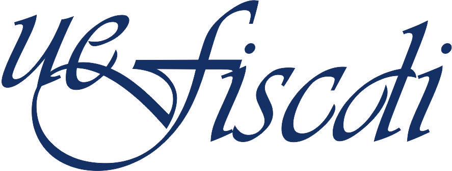